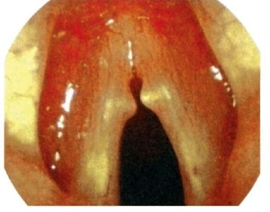

Хронические ларингиты и предраковые заболевания гортани
Определение и классификация
Под хроническими неспецифическими ларингитами подразумевают поверхностное диффузное неспецифическое воспаление слизистой оболочки гортани с длительным течением и периодическими обострениями в виде катарального воспаления. В большинстве случаев они сочетаются с хроническими воспалительными процессами ВДП, охватывающими как носоглоточные пространства, так и трахею и бронхи. по: Бабияк и соавт., т. 2, с. 110
Хронический гиперпластический ларингит — хронический ларингит, характеризующийся диффузной гиперплазией слизистой оболочки гортани или ограниченной гиперплазией в виде узелков, грибовидных возвышений, складок или валиков.
Хронический отёчно-полипозный ларингит — полиповидная гиперплазия голосовых складок. Его часто называют полиповидной гипертрофией, полиповидной дегенерацией, полипозным ларингитом, отёком Рейнке и болезнью Рейнке — Гайека. по: Нац. руководство, 2016, с. 856
По преобладающему характеру воспаления различают хронический катаральный ларингит, хронический гипертрофический ларингит и хронический атрофический ларингит. по: Бабияк и соавт., т. 2, с. 111
Различают следующие формы хронического воспаления в гортани: катаральный, атрофический, гиперпластический, диффузный или ограниченный, подскладочный ларингит и пахидермия гортани. по: Пальчун, Магомедов, Лучихин, учебник, с. 367–368
Коды по МКБ-10
Хронический ларингит кодируется так:
- J37 Хронический ларингит и ларинготрахеит.
- J37.0 Хронический ларингит.
- J37.1 Хронический ларинготрахеит.
по: Нац. руководство, 2016, с. 856
Эпидемиология
Хронические ларингиты составляют 8,4–10% всей патологии уха, горла и носа. Отёк Рейнке составляет 5,5–7,7% всех заболеваний гортани, приводящих к нарушениям фонации. по: Нац. руководство, 2016, с. 856
Хронические неспецифические ларингиты чаще встречаются у взрослых лиц мужского пола, которые чаще подвержены профессиональным и бытовым вредностям. В детском возрасте они возникают обычно после 4 лет, особенно при часто повторяющихся аденоамигдалитах. по: Бабияк и соавт., т. 2, с. 110
Распространенность хронического ларингита составляет 8,4% всех заболеваний ЛОР-органов у детей. Чаще встречается у мальчиков в возрасте от 4 до 10 лет. по: Богомильский, Чистякова, с. 400
Этиология и патогенез
Этиология и патогенез имеют три причины: а) индивидуальная предрасположенность к хроническим воспалительным заболеваниям ВДП, в том числе индивидуальные анатомические особенности строения гортани; б) факторы риска (профессиональные, бытовые — курение, алкоголизм); в) активизация условно-патогенной (вульгарной) микробиоты.
Банальная полиморфная флора свидетельствует о неспецифическом воспалении. Детские инфекции (корь, коклюш, дифтерия, а также повторные ангины и грипп) обусловливают поражение эпителия и лимфоидной ткани гортани, что способствует снижению местного иммунитета и активизации сапрофитной микробной флоры и повышает патогенное влияние экзогенных факторов риска. Немаловажную роль в патогенезе хронических неспецифических ларингитов играет нисходящая инфекция при хронических риносинуситах, аденоидитах, тонзиллитах, пародонтитах, кариесе зубов, которые служат очагами патогенной флоры, часто вызывающей хронический воспалительный процесс в гортани. Такую же роль может играть и восходящая инфекция при хроническом трахеобронхите, туберкулезе легких, гнойных заболеваниях бронхолегочной системы (бронхоэктатическая болезнь), астме, которые наряду с инфицированием гортани мокротой и гноем вызывают раздражение ее слизистой оболочки длительными приступами кашля.
Важную патогенную роль играет нарушение носового дыхания (риниты, полипы, искривление перегородки носа), когда больной вынужден постоянно дышать через рот, что неблагоприятно сказывается на состоянии слизистой оболочки гортани (отсутствуют увлажнение, согревание и обеззараживание воздуха при носовом дыхании). Особенно вредны при нарушении носового дыхания неблагоприятные метеорологические условия (холод, жара, сухость, влажность, запыленность) и микроклиматические условия в зоне обитания и труда.
Нагрузка на гортань у лиц, профессия которых связана с голосовой функцией или работой на шумном производстве, нередко является основным фактором риска возникновения хронических неспецифических ларингитов.
Несомненна неблагоприятная роль эндогенных факторов, снижающих местный иммунитет и трофику гортани, что, наряду с патогенетическим действием этих факторов на гортань, потенцирует вредное влияние внешних факторов риска, трансформируя их в активные причины возникновения заболеваний. К таким эндогенным факторам могут быть отнесены хронические заболевания пищеварительной системы, сердечно-сосудистой и выделительной систем, аллергия. Важную роль играют также эндокринные нарушения, в частности дисфункции щитовидной железы и инсулярного аппарата поджелудочной железы. Аналогичное воздействие могут оказывать кахексические состояния, обусловленные разными причинами, авитаминоз, ряд общих хронических инфекций (сифилис) и некоторые специфические заболевания ВДП (озена, склерома, волчанка и др.). по: Бабияк и соавт., т. 2, с. 110–111
Хронический гиперпластический ларингит характеризуется гиперплазией эпителия слизистой оболочки гортани; патогенез заболевания неизвестен. Для хронических ларингитов характерно рецидивирующее течение. Их считают предраковыми заболеваниями. Наибольшая вероятность малигнизации — при гиперпластическом ларингите, сопровождающемся кератозом. по: Нац. руководство, 2016, с. 858
Хроническое воспалительное заболевание слизистой оболочки и подслизистого слоя гортани и трахеи возникает под влиянием тех же причин, что и в случае с острыми заболеваниями: воздействие неблагоприятных бытовых, профессиональных, климатических, конституциональных и анатомических факторов. Иногда воспалительное заболевание с самого начала приобретает хроническое течение, например при болезнях сердечно-сосудистой и легочной систем. по: Пальчун, Магомедов, Лучихин, учебник, с. 367–368
Развитию заболевания способствуют повторяющиеся острые ларингиты, постоянное ротовое дыхание, распространение воспалительного процесса в слизистой оболочке при хронических ринофарингитах, синусите, хроническом тонзиллите, длительное и чрезмерное напряжение голоса, особенно в период мутации и после инфекции верхних дыхательных путей, вдыхание дыма, пыли, паров, газов и другие раздражающие факторы. К ларингиту приводят длительный напряженный кашель при хронических заболеваниях нижних дыхательных путей (хронический трахеобронхит, хроническая неспецифическая пневмония, туберкулез, аденопатия бронхиальных желез), застойные изменения слизистой оболочки при сердечно-сосудистых заболеваниях, наклонность к аллергическим реакциям, влажный холодный климат или высокая температура и запыленность воздуха. Более частые хронические заболевания гортани у детей, посещающих детские учреждения, объясняются повышенной голосовой нагрузкой в сочетании с психоэмоциональным фактором. по: Богомильский, Чистякова, с. 400–401
Патологическая анатомия
Воспалительные явления при хронических неспецифических ларингитах отличаются меньшей выраженностью и распространенностью, чем при остром катаральном ларингите. Они развиваются главным образом в области голосовых складок и в межчерпаловидном пространстве.
При хроническом катаральном ларингите отмечают гиперемию слизистой оболочки больше застойного, нежели воспалительно-паретического характера, свойственную острому диффузному катаральному ларингиту. Утолщение слизистой оболочки происходит из-за круглоклеточной инфильтрации, а не серозного ее пропитывания. Плоский эпителий на голосовых складках утолщен, на задней стенке глотки мерцательный эпителий путем метаплазии замещается многослойным плоским эпителием; железы складок преддверия увеличены и выделяют больше секрета. Особенно много мокроты бывает при поражении трахеи, которое нередко проявляется сильным, иногда судорожным кашлем, усиливающим раздражение и воспаление голосовых складок. Кровеносные сосуды подслизистого слоя расширены, стенка их истончена, из-за чего при сильном кашле возникают мелкоточечные подслизистые кровоизлияния. Вокруг сосудов отмечаются очаги плазмоцитарной и круглоклеточной инфильтрации.
При хроническом гипертрофическом ларингите гиперплазии подвергается эпителиальный покров и подслизистая соединительная ткань; возникает также инфильтрация внутренних мышц гортани, чаще всего мышечных волокон, составляющих основу истинных голосовых складок (мышца Симановского), происходит пролиферация слизистых желез и фолликулов морганиевых желудочков.
Общая патология
Под гиперплазией понимают чрезмерное, выходящее за пределы нормальной репликации увеличение количества структурных элементов тканей, происходящее путем их избыточного новообразования. Гиперплазия, лежащая в основе гипертрофии, проявляется в размножении клеток и образовании новых тканевых структур. При быстро протекающих гиперпластических процессах часто наблюдается уменьшение объема самих размножающихся клеточных элементов. Как отмечал А. И. Струков (1958), под гиперпластическими процессами в узком смысле понимают лишь те, которые связаны с гипертрофией тканей или органов, когда речь идет о функциональном тождестве новообразованной и предшествующей («маточной») тканей. Однако в патологии нередко всякое размножение клеток обозначают термином «гиперплазия». Для клеточного размножения в широком смысле применяют также термин пролиферация. Как универсальный морфогенетический процесс гиперплазия лежит в основе всех процессов патологического новообразования тканей (хроническое воспаление, регенерация, опухоли и т. д.). В структурно сложных органах, таких, например, как гортань, гиперпластический процесс может касаться не только одной ткани, но и всех других тканевых элементов, составляющих морфологическую основу органа в целом. Собственно говоря, так обстоит дело при хроническом гиперпластическом ларингите, когда пролиферации подвергаются эпителиальные клетки не только мерцательного, но и плоского многослойного эпителия, клеточные элементы слизистых желез и соединительная ткань. Отсюда такое разнообразие форм хронического гипертрофического ларингита — от «певческих узелков» до пролапса слизистой оболочки морганиевых желудочков и ретенционных кист.
Утолщение голосовых складок при хроническом гипертрофическом ларингите бывает сплошным, равномерным по всей длине, и тогда они приобретают веретенообразную форму с округлым свободным краем; или же ограниченным, в виде отдельных узелков, бугорков или несколько большего размера плотных белесоватых образований (laryngitis chronica nodosa). Так, более массивные утолщения, образующиеся путем пролиферации плоского эпителия, возникают иногда в области голосовой складки у голосового отростка черпаловидного хряща, где они имеют вид грибообразного возвышения на одной стороне с «целующимся» углублением на противоположной голосовой складке — circumscripta или симметрично расположенных контактных язв. Гораздо чаще пахидермии возникают на задней стенке гортани и в межчерпаловидном пространстве, где они приобретают бугристую поверхность сероватого цвета — pachydermia diffusa. В этом же месте может наблюдаться гиперплазия слизистой оболочки в виде подушки с гладкой красной поверхностью (laryngitis chronica posterior hyperplastica). Гиперпластический процесс может развиваться в желудочках гортани и вести к образованию складок или валиков слизистой оболочки, которые выходят за пределы желудочков и прикрывают собой голосовые складки. Гиперплазия может развиваться и в подскладочном пространстве, образуя валики, параллельные голосовым складкам (laryngitis chronica subglotica hyperplastica).
При хроническом атрофическом ларингите (laryngitis chronica atrophica seu sicca), встречающемся реже хронического гипертрофического ларингита, наблюдается метаплазия цилиндрического мерцательного эпителия в плоский ороговевающий; капилляры, слизистые железы и внутригортанные мышцы атрофируются, а интерстициальная соединительная ткань подвергается склерозированию, из-за чего голосовые складки истончаются, а секрет слизистых желез быстро высыхает и покрывает их сухими корками. по: Бабияк и соавт., т. 2, с. 111–113
Клиническая картина
Жалобы больных не отличаются какими-либо существенными особенностями и зависят исключительно от возникающих морфологических изменений, а также от степени голосовой нагрузки и профессиональной надобности в голосовом аппарате. Практически все больные предъявляют жалобы на осиплость голоса, быструю его утомляемость, першение в горле, нередко — на сухость и постоянный кашель.
Степень голосовой дисфункции может варьировать от легкой осиплости, возникающей после ночного сна и в течение рабочего дня мало беспокоящей больного, лишь к вечеру вновь появляющейся, до выраженной постоянной охриплости. Постоянная дисфония возникает в тех случаях, когда хронические неспецифические ларингиты и другие хронические заболевания гортани сопровождаются органическими изменениями голосовых складок и других ее анатомических образований, особенно при пролиферативно-кератозных процессах. Дисфония может существенно усугубляться при неблагоприятных погодных условиях, во время эндокринных пертурбаций у женщин (климакс, менструальный цикл, беременность, при наступлении обострения основного воспалительного процесса в гортани).
Для профессионалов даже незначительная дисфония является фактором психического стресса, ухудшающего фонаторные качества голосовой функции, нередко в корне меняющим их социальный статус и ухудшающим качество их жизни.
Нарушения чувствительности гортани (першение, зуд, жжение, ощущение инородного тела или скопившейся мокроты или, напротив, сухости) заставляют больного постоянно откашливаться, совершать попытки удалить «мешающий» объект путем смыкания голосовых складок и голосового усилия. Это приводит к дальнейшему утомлению голосовой функции, а иногда и к спастическим контрактурам голосовых мышц. Нередко эти ощущения способствуют развитию у больных канцерофобии и иных психоневротических состояний.
Кашель обусловлен раздражением тактильных рецепторов гортани, а при обильной мокроте — хроническим воспалением слизистой оболочки трахеи и бронхов. Кашель более выражен в утренние часы, особенно у курильщиков и работников, профессии которых связаны с вредным производством (литейщики, химики, сварщики, аккумуляторщики и др.). по: Бабияк и соавт., т. 2, с. 113
При хроническом ларингите развивается стойкое нарушение голосовой функции, иногда кашель, боль в горле при голосовой нагрузке.
При длительно текущем ларингите развивается гипертрофия вестибулярного отдела гортани в связи с формированием ложноскладковой фонации. по: Нац. руководство, 2016, с. 858
Основным симптомом при хроническом ларингите является дисфония (изменение голоса от небольшой охриплости до периодической афонии). Сначала голос теряет силу, высоту, становится хриплым, что более выражено по утрам, когда при кашле освобождаются дыхательные пути от накопившейся мокроты. Днем голос становится несколько чище и снова грубеет к вечеру. Больных беспокоят неприятные ощущения в области гортани, кашель, интенсивность которого зависит от количества выделяемой мокроты. На общее состояние болезнь не влияет. по: Богомильский, Чистякова, с. 401–403
Большое значение в установлении формы хронического ларингита имеет ларингоскопическое исследование гортани как при непрямой, так и прямой ларингоскопии, в том числе и при микроларингоскопии, при которой удается осмотреть те части гортани, которые не визуализируются при использовании обычного директоскопа.
Хронический катаральный ларингит
При хроническом катаральном ларингите часто наблюдают диффузную гиперемию слизистой оболочки, которая более всего выражена в области голосовых складок, при этом слизистая оболочка местами покрыта вязким слизистым секретом. по: Бабияк и соавт., т. 2, с. 113–114
Ларингоскопическая картина хронического ларингита разнообразна. В абсолютном большинстве случаев патология двусторонняя. Хронический катаральный ларингит характеризуется усилением сосудистого рисунка голосовых складок, их гиперемией, сухостью слизистой оболочки. по: Нац. руководство, 2016, с. 859
Хроническое катаральное воспаление слизистой оболочки гортани (laryngitis chronica catarrhalis) — самая частая и наиболее легкая форма хронического воспаления. Основную этиологическую роль в данной патологии играет длительная нагрузка на голосовой аппарат (певцы, лекторы, учителя и т.д.). Важное значение имеет и воздействие неблагоприятных экзогенных факторов: климатических, профессиональных и вредных привычек.
Наиболее частым признаком является охриплость, расстройство голосообразовательной функции гортани, быстрая утомляемость, изменение тембра голоса. В зависимости от выраженности болезни беспокоят также першения, сухость, ощущения инородного тела в гортани, кашель. Различают кашель курильщика, который возникает на фоне продолжительного курения и характеризуется постоянным, редким, несильным кашлем. При ларингоскопии определяется умеренная гиперемия, отечность слизистой оболочки гортани, больше в области голосовых складок, и выраженная инъецированность сосудов слизистой оболочки. Диагностика не представляет затруднений и основывается на характерной клинической картине, анамнезе и данных непрямой ларингоскопии. по: Пальчун, Магомедов, Лучихин, учебник, с. 368
Хронический катаральный ларингит в большинстве случаев развивается вследствие острого воспаления слизистой оболочки гортани. Имеют значение профессиональные факторы (запыленность, загрязненность помещений).
Жалобы больных сводятся также к сухости, постоянному ощущению инородного тела в гортани, что вызывает покашливание или кашель. по: Пальчун, учебник для колледжей, с. 180–181
Характеризуется нарушением местного кровообращения с выраженными явлениями венозного стаза, мелкоклеточной инфильтрацией, очаговой метаплазией цилиндрического эпителия голосовых складок в многослойный плоский. Голосовые складки смыкаются не полностью, на них видны расширенные кровеносные сосуды и вязкая слизь. Иногда присоединяется парез голосовой и поперечной черпаловидной мышц. Вестибулярные складки изменены: уплотнены, гиперемированы, отечны, иногда закрывают голосовые складки, препятствуя правильному голосообразованию; слизистые железы увеличены. Больные жалуются на охриплость, повышенную утомляемость голоса, першение в горле, частое покашливание с выделением слизистой мокроты. Во время обострения хронического ларингита все явления усиливаются. Прогноз благоприятный при условии своевременного лечения. по: Богомильский, Чистякова, с. 401–403
Хронический гиперпластический ларингит
При хроническом гипертрофическом ларингите голосовые складки диффузно утолщены, отечны, с неровными краями. В межчерпаловидном пространстве наблюдается сосочковидная пролиферация слизистой, или пахидермия, которая при зеркальной ларингоскопии хорошо обозрима лишь в позиции Киллиана. Эта пахидермия препятствует полному смыканию голосовых складок, из-за чего страдает фонаторная функция гортани: голос становится грубым, дребезжащим, быстро утомляется. В некоторых случаях отмечается и выраженная гиперплазия складок преддверия, которые при непрямой ларингоскопии прикрывают голосовые складки, осмотр которых в этом случае возможен только при прямой ларингоскопии. При фонации эти гипертрофированные складки соприкасаются и под воздействием выдыхаемого воздуха придают голосу характерный, почти лишенный тональности, грубый звук, которым иногда пользуются эстрадные певцы, например великий американский певец Луи Армстронг. В редких случаях возникает гиперплазия слизистой оболочки в подскладочном пространстве, которая приобретает вид двух расположенных по обе стороны гортани удлиненных и утолщенных валиков, как бы дублирующих находящиеся над ними голосовые складки и выступающих из-за них, сужая просвет гортани. по: Бабияк и соавт., т. 2, с. 113–114
При хроническом гиперпластическом ларингите отмечают наличие инфильтрации голосовых складок, очагов кератоза, гиперемии и пахидермии (гиперплазия слизистой оболочки в межчерпаловидной области). Кератоз — общее название дерматозов, характеризующихся утолщением рогового слоя эпидермиса. В случае гиперпластического ларингита это патологическое ороговение эпителия слизистой оболочки гортани в виде пахидермии, лейкоплакии и гиперкератоза. по: Нац. руководство, 2016, с. 859
Хронический гиперпластический (гипертрофический) ларингит (laryngitis chronica hyperplastica) характеризуется ограниченной или диффузной гиперплазией слизистой оболочки гортани. Различают следующие виды гиперплазии слизистой гортани:
- фиброзные узелки голосовых складок (певческие узелки);
- пахидермия гортани;
- хронический подскладочный ларингит;
- выпадение, или пролапс, морганиева желудочка.
по: Пальчун, Магомедов, Лучихин, учебник, с. 369
Основной жалобой больного является различной степени выраженная стойкая охриплость, утомляемость голоса, иногда афония. При обострениях больного беспокоят першение, ощущение инородного тела при глотании, редкий кашель со слизистым отделяемым. Непрямая ларингоскопия и стробоскопия позволяют обнаружить ограниченную или диффузную гиперплазию слизистой оболочки, наличие густой слизи как в межчерпаловидном, так и в других отделах гортани. При диффузной форме гиперпластического процесса слизистая оболочка утолщена, пастозна, гиперемирована; края голосовых складок утолщены и деформированы на всем протяжении, что препятствует их полному смыканию. При ограниченной форме (певческие узелки) слизистая оболочка гортани розового цвета без особых изменений; на границе между передней и средней третями голосовых складок на их краях расположены симметричные образования в виде соединительнотканных выростов (узелков) на широком основании диаметром 1–2 мм. Иногда узелок имеется только на одной голосовой складке. При пахидермии гортани в межчерпаловидном пространстве слизистая оболочка утолщена, на ее поверхности имеются эпидермальные ограниченные выросты, внешне напоминающие мелкую бугристость, могут быть грануляции на задней трети голосовых складок и межчерпаловидном пространстве. В просвете гортани имеется скудное вязкое отделяемое и местами корки. Выпадение (пролапс) морганиева желудочка возникает в результате длительного перенапряжения голоса и воспалительного процесса слизистой оболочки желудочка. При форсированном выдохе, фонации, кашле гипертрофированная слизистая оболочка выступает из желудочка гортани и частично прикрывает голосовые складки, препятствуя полному смыканию голосовой щели, обусловливая хриплое звучание голоса. Хронический подскладочный ларингит при непрямой ларингоскопии напоминает картину ложного крупа, при этом имеется гипертрофия слизистой оболочки подголосового пространства, суживающая голосовую щель. Анамнез и эндоскопическая микроларингоскопия и биопсия позволяют уточнить диагноз. по: Пальчун, Магомедов, Лучихин, учебник, с. 369–371
Основная жалоба — охриплость или даже афония, что обусловлено обычно неравномерным утолщением голосовых складок, ограничением их подвижности и неправильной фонацией вестибулярными складками. Непрямая и прямая ларингоскопия позволяют обнаружить гипертрофию слизистой оболочки, как правило, симметричную с обеих сторон гортани и в межчерпаловидном пространстве в виде поперечного валика с зазубренным краем, выстоящего в просвет гортани. Нередко образуются один или два небольших остроконечных или округлых выступа величиной 1–2 мм, расположенных на свободных краях. Они не относятся к истинным опухолям и представляют собой фиброзное образование. Такие утолщения могут возникать и поодиночке на том или ином участке голосовой складки. по: Пальчун, учебник для колледжей, с. 181–182
Слизистая оболочка имеет серовато-красный или серый цвет. При микроскопии определяются гипертрофия слизистой оболочки, иногда граничащая с гиперплазией; круглоклеточная инфильтрация, расширение сосудов, эпителиальная метаплазия, изменение секреции. Изменение голоса более стойкое, нежели при катаральном ларингите. При гипертрофии складок преддверия отмечается увеличение их с одной или с обеих сторон, они частично или полностью прикрывают голосовые складки. В некоторых случаях наблюдается особый вид хронического гипертрофического подскладочного ларингита, при котором под голосовыми складками параллельно им образуются валики гиперплазированной слизистой оболочки. по: Богомильский, Чистякова, с. 401–403
Певческие узелки
У лиц, профессия которых связана с напряжением голоса (певцы, учителя, актеры), нередко на голосовых складках приблизительно посредине появляются симметрично расположенные конусовидные узелки, основу которых составляют утолщенный эпителий и эластическая ткань, — так называемые певческие узелки, или noduli laringis. по: Бабияк и соавт., т. 2, с. 112
Узелки голосовых складок — небольшие симметричные бугорки (ограниченные уплотнения), расположенные на свободном крае голосовых складок на границе передней и средней трети, имеют широкое основание, представляют собой фибриноидно-гиалиновые образования, реже очаговую гиперплазию многослойного плоского эпителия. Среди причин охриплости у детей узелки голосовых складок («узелки крикунов») занимают первое место (60%), наблюдаются у много и сильно кричащих детей, возникают в результате чрезмерного напряжения голоса и хронической травматизации. Наибольшее число больных выявляют в возрасте 7-10 лет, в период особенно интенсивного психомоторного развития и значительной нагрузки на голосовой аппарат. В начале болезни такой бугорок образуется на одной складке. В последующем травматизация вызывает симметричный бугорок на второй складке. В выраженных случаях узелки доходят до размера булавочной головки. Голосовые складки при фонации не могут плотно смыкаться, между ними образуется щель, влияющая на голос. В клинической картине наблюдаются сначала голосовая усталость, затем стойкая охриплость. После сна она выражена меньше, к концу дня усиливается в связи с перенапряжением голоса. Затрудненного дыхания не бывает. Окончательный диагноз устанавливают при ларингоскопии. При дифференциальной диагностике необходимо иметь в виду возможность специфических гранулем и опухоли. по: Богомильский, Чистякова, с. 401–403

Пахидермия и контактная язва
Две формы хронического гипертрофического ларингита заслуживают особого внимания — это контактная язва и пролапс морганиева желудочка (желудочка гортани, парного образования, находящегося на латеральной стенке гортани между складкой преддверия и голосовой складкой).
Контактная язва гортани, названная так американскими авторами C. H. Jackson и Lederer, есть не что иное, как локальные симметрично расположенные пахидермии, образующиеся на слизистой оболочке, покрывающей голосовые отростки черпаловидных хрящей. Нередко остальная часть гортани имеет нормальный вид, хотя эти пахидермии свидетельствуют о наличии хронического гипертрофического ларингита. Контактные язвы обязаны своим происхождением чрезмерным голосовым усилиям у ослабленных лиц со слаборазвитым субэпителиальным слоем. по: Бабияк и соавт., т. 2, с. 114
Пахидермия — утолщение задних отделов голосовых складок и слизистой оболочки в межчерпаловидном пространстве, исчезающее при глубоком спокойном дыхании, а также лейкоплакии и кератоз, возникающие в области голосовых отростков черпаловидных хрящей, гипертрофия слизистой оболочки желудочка гортани с выпадением его по направлению к средней линии во время дыхания. Гистологически выявляется мощная папиллярная и тяжистая гиперплазия покровного эпителия в сочетании с воспалением, реактивной пролиферацией и огрубением подлежащей соединительной ткани. При гиперкератозах утолщаются зернистый и роговой слои. Клиническая картина включает резко выраженную охриплость вплоть до афонии из-за неполного смыкания голосовых складок и вязкого отделяемого в межчерпаловидном пространстве. Изменение голоса более стойкое и прогноз в отношении его полного восстановления при этой форме хронического ларингита менее благоприятен, чем при катаральной. по: Богомильский, Чистякова, с. 401–403
Пролапс желудочка гортани, кисты и полипы
Пролапс желудочка гортани — название, не точно соответствующее фактической морфологической картине. На самом деле речь идет о чрезмерной пролиферации слизистой оболочки, покрывающей один из морганиевых желудочков, которая пролабирует в просвет гортани и может частично или полностью прикрыть собой соответствующую голосовую складку. Это гиперпластическое образование отличается красным цветом, часто имеет отечный вид и может быть принято за опухоль гортани. Нередко пролапс желудочков гортани сочетается с кистой желудочковой складки, возникающей в результате пролиферации эпителия слизистой железы и закупорки ее выводного протока. Однако такие кисты гортани возникают редко, гораздо чаще фониатры и ЛОР-специалисты широкого профиля встречаются с так называемой ложной кистой голосовой складки, при которой в большинстве случаев симметрично на противоположной складке образуется дефект в виде контактной язвы. Нередко ложные кисты принимают за полипозные образования голосовых складок, отличительной особенностью которых является более светлый оттенок; по интенсивности он занимает промежуточное положение между ложной кистой и веретенообразным отеком голосовых складок. Описываемые объемные образования существенно нарушают функцию голосовых складок, препятствуя их полному смыканию, что визуализируется при стробоскопии.
Полипозные образования, возникающие на голосовых складках, морфологически относятся к так называемым микстам, состоящим из фиброзной и ангиоматозной тканей. В зависимости от соотношения этих морфологически различающихся структур эти образования получили названия фибром, ангиофибром и ангиом. Как отмечал Д. М. Томассин, красный, или ангиоматозный, тип полипа может быть проявлением «врожденных патологических процессов», а цвет его зависит от того, что фибринозный экссудат окутывает ангиоматозные элементы, придавая им темно-красный оттенок.
Слизистые ретенционные кисты встречаются как у взрослых, так и у детей. Они выглядят как «желтоватые горбики, возникающие под слизистой оболочкой и деформирующие свободный край голосовой складки» (Д. М. Томассин). Морфологически они представляют собой истинные кистозные полости, расположенные в строме слизистой железы. Киста развивается вследствие закупорки выводного протока железы под влиянием хронического пролиферативного воспалительного процесса. Полость железы заполняется секретом, а ее стенки подвергаются пролиферации (размножение слизистых и вставочных клеток, утолщение и увеличение размера стенки кисты). Односторонние и двусторонние кисты, как и полипы, препятствуют полному смыканию голосовых складок и нарушают фонаторную функцию гортани.
Отёк Рейнке (хронический отёчно-полипозный ларингит)
Большое значение в возникновении описанных патологических состояний голосовых складок при хроническом гипертрофическом ларингите ряд авторов придает так называемому пространству Рейнке, составляющему часть голосовой складки. Дно пространства Рейнке образует покрывающий голосовую мышцу слой фасций, который утолщается по направлению к свободному краю голосовой складки и вплетается в голосовую связку, которая, в свою очередь, в каудальном направлении переходит в эластический конус и перстневидную связку, обеспечивающую прикрепление голосовой складки к отростку перстневидного хряща. Потолок пространства Рейнке образован тонким слоем плоского эпителия, лежащим на прочной базальной мембране, покрывающей фасцию голосовой мышцы. По данным специальных фониатрических, стробоскопических и модельных исследований установлено, что пространство Рейнке играет важную роль в тонкой модуляции голоса, являющейся важным акустическим механизмом, обогащающим тембр певческого голоса и придающим ему неповторимую индивидуальность. Поэтому одним из принципов современной микрохирургии гортани является сохранение в оптимальном состоянии структур пространства Рейнке при хирургических вмешательствах по поводу описанных патологических состояний голосовых складок. Одним из патологических проявлений хронического гипертрофического ларингита является отек тканей, составляющих пространство Рейнке (отек Рейнке), возникающий при наличии явлений хронического ларингита и сильном голосовом напряжении фонаторной функции гортани. Изредка в пространстве Рейнке образуются кистоподобные образования, которые одними авторами трактуются как ретенционные кисты, возникающие из «заблудившихся» слизистых желез, другими — как отек этого пространства. Спор решает гистологическое исследование удаленной ткани. Часто при длительной ИВЛ интубационная трубка является причиной так называемой интубационной гранулемы. по: Бабияк и соавт., т. 2, с. 114–116
При отёчно-полипозном ларингите возможно развитие дыхательной недостаточности как следствие стеноза гортани третьей степени. Для отёка Рейнке характерны признаки гирсутизма у женщин, склонность к отёкам лица.
При хроническом отёчно-полипозном ларингите внешний вид полиповидной дегенерации слизистой оболочки может варьировать от лёгкой веретенообразно-стекловидной опухоли (как «брюшко») до тяжёлого флотирующего полиповидного полупрозрачного серого или серо-розового студенистого утолщения, стенозирующего просвет гортани. по: Нац. руководство, 2016, с. 858–859
Контактная гранулёма, псевдомиксома, папиллома с гиперкератозом
О многообразии морфологических изменений при хроническом гипертрофическом ларингите уже было сказано. Отметим еще несколько форм этого заболевания, различия между которыми могут быть окончательно установлены лишь при микроларингоскопии и гистологическом исследовании. Одной из таких форм является контактная гранулема, возникающая, как и контактная язва, при длительном травматическом соприкосновении голосовых складок профессионального генеза или как осложнение длительного воспалительного процесса.
Другой нечасто встречающейся формой хронического гипертрофического ларингита является псевдомиксома1 гортани, представляющая собой веретенообразной формы инфильтрат, располагающийся на голосовой складке. Иногда псевдомиксома бывает двусторонней с развитой сетью кровеносных сосудов. Нередки одиночные папилломы2 с гиперкератозом3, возникающие исключительно у взрослых мужчин, имеющие форму единичного выроста, бугорка серого или беловатого цвета плотной консистенции. Все указанные формы хронического гипертрофического ларингита требуют дифференциации с предраком или карциномой гортани.
Хронический атрофический ларингит
Хронический атрофический ларингит встречается значительно реже; чаще он протекает в виде субатрофического процесса слизистой оболочки гортани, сочетающегося с системной субатрофией слизистой оболочки ВДП.
Общая патология
Под атрофией понимают патологический процесс, характеризующийся уменьшением объема и размеров, а также выраженными в различной степени качественными изменениями клеток, тканей и органов, возникающими обычно во время различных болезней или как их следствие, что отличает их от гипоплазии и гипогенезии (патологическая атрофия). В отличие от последней, различают физиологическую (возрастную) атрофию, обусловленную естественным старением тканей, органов и организма в целом и их гипофункцией. Важную роль в возникновении физиологической атрофии играет увядание эндокринной системы, что отражается на таких гормонозависимых органах, как гортань, органы слуха и зрения. Патологическая атрофия отличается от физиологической как причинами возникновения, так и качественными особенностями — например более быстрым увяданием специфической функции органа или ткани при патологической атрофии. В основе любого вида атрофии лежит преобладание процессов диссимиляции над процессами ассимиляции. В зависимости от причин, вызывающих атрофию, различают: а) трофоневротическую; б) функциональную; в) гормональную; г) алиментарную; д) профессиональную атрофию, возникающую в результате вредного воздействия физических, химических и механических факторов.
В оториноларингологии примеров последней достаточно много (профессиональные аносмия, тугоухость, атрофические риниты, фарингиты и ларингиты и др.). К перечисленным формам атрофии следует добавить и атрофию, вызванную последствиями острой или хронической инфекции, как банальной, так и специфической. Однако этот вид атрофии сопровождается и морфологическими изменениями тканей и органов, характеризующимися полной деструкцией или замещением специфических тканей фиброзной.
Что касается конкретно хронического атрофического ларингита, в его патогенезе могут принимать участие все перечисленные причины, вызывающие атрофию не только собственно эпителия слизистой оболочки, но и всех остальных ее элементов (трофических и чувствительных нервных окончаний, кровеносных и лимфатических сосудов, соединительнотканной прослойки и т. д.). На этом основании следует признать хронический атрофический ларингит системным заболеванием, требующим аналитического подхода как для его изучения, так и для разработки этиопатогенетического лечения.
При выраженной клинической и патологоанатомической форме отмечается значительная сухость слизистой оболочки, приобретающей красновато-серый оттенок, голосовые складки гиперемированы, покрыты сухими корками желтого или зеленовато-грязного цвета, плотно спаянные с подлежащей поверхностью. При их отторжении на их месте остаются мелкие кровоизлияния и повреждения эпителиального покрова. В целом полость гортани представляется расширенной с истонченной слизистой оболочкой, через которую просвечивают мелкие извитые кровеносные сосуды. Аналогичная картина наблюдается и в слизистой оболочке глотки. Больные постоянно покашливают, делают попытки удаления корок из гортани при помощи характерных голосовых звуков; их голос постоянно сиплый, быстро утомляется. В сухих помещениях эти явления усиливаются и, напротив, во влажной среде ослабевают. по: Бабияк и соавт., т. 2, с. 116–117
При атрофическом ларингите слизистая оболочка голосовых складок выглядит тусклой, возможно наличие вязкой мокроты, гипотонии голосовых складок и несмыкания их при фонации. по: Нац. руководство, 2016, с. 859
Причиной развития атрофического ларингита является чаще всего атрофический ринофарингит. Условия окружающей среды, профессиональные вредности (запыленность, загазованность горячий воздух и др.), болезни желудочно-кишечного тракта, отсутствие нормального носового дыхания способствуют развитию атрофии слизистой оболочки гортани.
Ведущими жалобами при атрофическом ларингите являются ощущение сухости, першения в гортани и ощущение инородного тела в гортани, а также дисфония различной степени выраженности. При откашливании в мокроте могут быть прожилки крови вследствие нарушения целостности эпителия слизистой оболочки в момент кашлевого толчка. При ларингоскопии слизистая оболочка истончена, гладкая, блестящая, местами покрыта вязкой слизью и корками. При фонации смыкаются не полностью, оставляя щель овальной формы, в просвете которой также могут быть корки. по: Пальчун, Магомедов, Лучихин, учебник, с. 372
Чаще всего хронический атрофический ларингит этиологически и патогенетически связан с атрофией слизистой оболочки носа и глотки; в ряде случаев он развивается после перенесенной дифтерии или скарлатины. В начале процесса при ларингоскопии определяют яркую гиперемию слизистой оболочки, которая выглядит блестящей. Гиперемия в дальнейшем исчезает, появляются вязкий секрет, корки темно-зеленого цвета в гортани. Прогноз при систематическом лечении часто благоприятный, хотя излечения добиться трудно. по: Пальчун, учебник для колледжей, с. 182
Хронический атрофический ларингит наблюдается у детей старшего возраста, обусловлен атрофией вследствие потери железистого аппарата, истончением слизистой оболочки гортани, которая покрыта густой вязкой слизью и присохшими корками. Обычно атрофический процесс в гортани сопутствует такому же процессу в носу и глотке. Возможно формирование атрофического процесса после язвенно-некротического поражения гортани. Развитию заболевания способствуют патология желудочно-кишечного тракта, сердечно-сосудистой системы, хронический бронхит, хронический нефрит, эндокринные заболевания, нарушение углеводного обмена. Больные жалуются на неловкость и ощущение сухости, инородного тела в горле, упорное першение, охриплость, слабость голоса, иногда афонию. При озене часто имеются корки в гортани и трахее. При их скоплении в просвете гортани возможно затруднение дыхания. Охриплость больше выражена утром, после откашливания мокроты голос улучшается. При ларингоскопии видна бледная, сухая слизистая оболочка гортани, голосовые складки истончены, дряблые, при фонации смыкаются не полностью. по: Богомильский, Чистякова, с. 401–403
Кандидозный ларингит
Для кандидозного ларингита характерны гиперемия и отёк слизистой оболочки, наличие белых фибринозных налётов. Различают опухолевидную, катарально-плёнчатую и атрофическую формы. по: Нац. руководство, 2016, с. 859
Диагностика и дифференциальная диагностика
Диагноз устанавливают на основании анамнеза (длительное течение, наличие пагубных привычек и соответствующих профвредностей, хронических очагов инфекции по соседству и на отдалении), жалоб больного, характерной эндоскопической картины. Многообразие морфологических нарушений только при банальных хронических воспалительных процессах гортани, не считая возникающих при инфекционных и специфических заболеваниях, делает диагностику хронических ларингитов весьма ответственным процессом, поскольку многие заболевания расцениваются как предраковые, перерождение которых в злокачественные новообразования, включая даже саркому, не так уж редко, что особенно наглядно было продемонстрировано официальной статистикой в конце XX в. по: Бабияк и соавт., т. 2, с. 117
В сомнительных случаях, особенно при гиперпластических хронических ларингитах, обязательно проводят рентгенологическое обследование больного. Так, при хроническом гипертрофическом ларингите фронтальная томография гортани позволяет визуализировать следующие изменения: утолщение голосовых или преддверных складок, утолщение желудочковой складки и ее пролапс, а также другие изменения без обнаружения дефектов внутренних стенок и анатомических образований гортани.
Важный дифференциально-диагностический признак, свидетельствующий о доброкачественности процесса, — симметричность морфологических изменений в гортани, в то время как злокачественные новообразования всегда являются односторонними. В тех случаях, когда хронический гипертрофический ларингит носит односторонний характер, необходимо рентгенографическое обследование больного и биопсия вызывающих подозрение «плюс тканей». Дифференцируют хронические банальные ларингиты с первичным инфильтративным туберкулезом гортани, третичным сифилисом и доброкачественными и злокачественными опухолями, склеромой и папилломатозом гортани. У детей хронический гипертрофический ларингит дифференцируют с папилломатозом и невыявленными инородными телами гортани. Хронический атрофический ларингит дифференцируют с первичной озеной гортани. Миогенные дисфункции гортани, часто возникающие при банальном хроническом ларингите, следует дифференцировать с нейрогенными параличами внутренних мышц гортани, для которых характерны специфические симптомы (см. далее). по: Бабияк и соавт., т. 2, с. 117–118
Микроларингостробоскопическое исследование при кератозе позволяет выявить участки спаянного с подлежащими слоями слизистой оболочки кератоза, наиболее подозрительного в плане малигнизации.
Дифференциальная диагностика хронического гиперпластического ларингита и рака гортани часто представляет большие трудности. Обращают на себя внимание и другие изменения голосовой складки — выраженная дисплазия, инфильтрация слизистой оболочки, образование очагов плотного, спаянного с подлежащими тканями кератоза и др. Окончательный диагноз при ларингите устанавливают по результатам гистологического исследования. по: Нац. руководство, 2016, с. 859–860
Ограниченные формы гиперпластического ларингита необходимо дифференцировать с специфическими инфекционными гранулемами, а также с новообразованиями. Соответствующие серологические реакции и биопсия с последующим гистологическим исследованием помогают в постановке диагноза. Клинический опыт показывает, что специфические инфильтраты не имеют симметричной локализации, как при гиперпластических процессах. по: Пальчун, Магомедов, Лучихин, учебник, с. 371
Широко используют стробоскопию и микроларингоскопию.
Хронический ларингит следует дифференцировать с опухолями и инфекционными гранулемами. по: Богомильский, Чистякова, с. 401–403
Лечение
Общие меры
Лечение заключается прежде всего в исключении факторов риска, способствующих возникновению заболевания: пагубные привычки, профвредности, очаги инфекции в ВДП. Существенное значение имеет диета, которую должны соблюдать больные (исключение горячих и холодных напитков, острых блюд, жирной и жареной пищи). В рацион больного следует включать фрукты, овощи, легкоусвояемую пищу. При нарушениях функций желудочно-кишечного тракта, выделительной и эндокринной систем следует направлять больных к соответствующим специалистам.
Специальное лечение подразделяется на консервативное и хирургическое (микрохирургическое). Консервативному лечению подлежат лица, страдающие хроническим катаральным или атрофическим ларингитом и некоторыми формами хронического гипертрофического ларингита, хирургическому — больные хроническим гипертрофическим ларингитом.
Консервативное лечение катарального и гиперпластического ларингита
По мнению многих ларингологов, с точки зрения применения медикаментов хронический катаральный и гипертрофический ларингиты мало чем различаются, что позволяет рассматривать их в едином контексте. Важно подчеркнуть две особенности лечения этих форм заболевания: лечение должно быть строго индивидуальным с учетом чувствительности больного к применяемым средствам и получаемого эффекта; лечение не должно активизировать пролиферативные процессы, поскольку за проявлениями хронического гипертрофического ларингита могут скрываться предраковые состояния.
При индивидуальном подборе лечебных мероприятий (ингаляции, инстилляции, аэрозольные орошения и др.) следует иметь в виду, что хронические катаральный и гипертрофический ларингиты склонны к обострениям, при которых сухость и образование вязкой, трудноотделяемой мокроты, скапливающейся на голосовых складках, может сменяться повышенной секрецией слизи (активизация деятельности слизистых желез) и экссудацией (результат активизации воспаления слизистой оболочки). Эти изменения определяют тактику лечения больного и характер назначаемых препаратов (смягчающих, вяжущих, прижигающих). При обострениях можно пользоваться теми же средствами, что и при острых катаральных ларингитах. Не утратили своего целительного значения средства, применявшиеся в середине XX в. Так, к смягчающим и противовоспалительным средствам относили 1% масляный раствор ментола, хлоробутанол для ингаляций, масло облепиховое для вливаний в гортань и др.
В качестве вяжущих и слегка прижигающих средств применяли 1–3% раствор колларгола, 0,5% раствор резорцина для вливания в гортань по 1–1,5 мл 1 раз в день, 0,25% раствор серебра нитрата — вливание по 0,5 мл через день при гиперсекреции, раствор танина с глицерином, 0,5% раствор цинка сульфата (10 мл) в смеси с эфедрина гидрохлоридом (0,2) для вливания в гортань по 1 мл и др. Для разжижения вязкой мокроты и образующихся в гортани корок применяли раствор химотрипсина или трипсина (0,5–1 : 1000) для вливания в гортань по 1,5–2 мл.
При узелковых образованиях наряду с другими лекарственными средствами (вливание в гортань масляных растворов ментола, смазывания 2% раствором нитрата серебра) применяли вдувание в гортань различных порошкообразных веществ, например: Rp.: Aluminis 1,0: Amyli Tritici 10,0. M. f. pulv. subtil или Tannini et Amyli Tritici аа 5,0. M. f. pulv. Subtil.
Для электрофореза гортани применяли 2% раствор кальция хлорида, 0,25% раствор цинка сульфата, 1% раствор калия йодида, гиалуронидазу 0,1 (64 ЕД) на процедуру при «певческих узелках» и др.
Нельзя с уверенностью сказать, что современная терапия так называемых4 банальных хронических заболеваний гортани достигла значительных успехов, можно лишь утверждать, что это направление в оториноларингологии является одним из актуальных, особенно в условиях насущных экологических проблем, стоящих перед человечеством, и что это направление таит в себе большие потенциальные возможности. Тем не менее уже сегодня можно предложить практическому врачу ряд современных методов и препаратов, которые в комплексе с традиционными средствами могут быть использованы в лечении при так называемых хронических банальных ларингитах.
Склонность хронических неатрофических ларингитов к пролиферативным процессам обусловливает определенную дифференциацию методов в лечении некоторых их форм. Так, при обострении хронического катарального ларингита, обусловленном активизацией сапрофитной микробиоты (ОРЗ, аденовирусная инфекция, общее и местное переохлаждение и т. п.), показано применение композитного препарата амилметакрезол + дихлорбензиловый спирт + лидокаин, обладающего антисептическим и местноанестезирующим действием. Обычно используют спрей-дозатор (1 флакон содержит 20 мл раствора). При использовании спрея для лечения обострения хронического катарального ларингита необходимо при распылении препарата струю дозу направлять на вдохе в гортаноглотку, имитируя стридорозное дыхание (сведение голосовых складок). В этом случае большая часть препарата оседает на голосовых складках и стенках гортани.
При частых обострениях хронического катарального ларингита, а в некоторых случаях и хронического гипертрофического ларингита, показано применение лизатов бактерий (для детей — в детской форме), содержащих лиофилизированный лизат бактерий, чаще всего вызывающих инфекции дыхательных путей (Streptococcus pneumoniae, Str. viridans, Str. pyogenes, Staphylococcus aureus, Moraxella catarrhalis, Haemophylus influenzae, Klebsiella pneumoniae, Kl. osaenae). Препарат обладает иммуномодулирующим действием: стимулирует макрофаги, увеличивает количество циркулирующих Т-лимфоцитов и антител IgA, IgG и IgM (в том числе на слизистой оболочке дыхательных путей), стимулирует естественные механизмы защиты организма от инфицирования органов дыхания, уменьшает частоту и тяжесть респираторных заболеваний.
Препаратом выбора может служить «Бронхалис Хель» устарело в ГРЛС не зарегистрирован, обладающий противовоспалительным, спазмолитическим, противокашлевым и отхаркивающим действием. Он показан не только при хроническом катаральном ларингите и его обострениях, но и при обструктивных и воспалительных заболеваниях ВДП (катар курильщиков, хронический бронхит, бронхиальная астма и др.), эффективен и при обострениях хронического гипертрофического ларингита.
При хронических ларингитах любой из трех форм, сопутствующих иммунодефицитным состояниям любого происхождения, проявляющихся в виде хронических, вялотекущих и рецидивирующих инфекционно-воспалительных процессов не только в ВДП, но и другой локализации, показан глюкозаминилмурамилдипептид — полусинтетический гликопептид, представляющий собой основной структурный фрагмент клеточной стенки всех известных бактерий и обладающий широким иммуномодулирующим действием.
При выраженном обострении банального хронического ларингита и его осложнениях пиогенного характера, а также для их профилактики применяют антибиотики из групп цефалоспоринов (цефтриоксон, цефуроксим), макролидов (азитромицин) и фторхинолонов (офлоксацин). по: Бабияк и соавт., т. 2, с. 118–123
Необходимо устранить воздействие этиологического фактора, рекомендуется соблюдение щадящего голосового режима (исключить громкую и продолжительную речь). Лечение в основном носит местный характер. В период обострения эффективно вливание в гортань раствора антибиотиков с суспензией гидрокортизона: 4 мл изотонического раствора хлорида натрия с добавлением 150 000 ЕД пенициллина, 250 000 ЕД стрептомицина, 30 мг гидрокортизона. Этот состав вливают в гортань по 1–1,5 мл два раза в день. Этот же состав можно использовать для ингаляции. Курс лечения проводится в течение 10 дней. При местном использовании лекарственных препаратов можно менять антибиотики после посева на флору и выявления чувствительности к антибиотикам. Из состава можно исключить также гидрокортизон, а добавить химотрипсин или ацетилцистеин, обладающие секретолитическим и муколитическим эффектами. Благоприятно действует назначение аэрозолей для орошения слизистой оболочки гортани комбинированными препаратами, в состав которых входит антибиотик, анальгетик, антисептик (фузафунгин устарело фузафунгин снят с производства в 2016 г., лизаты бактерий). Применение масляных и щелочно-масляных ингаляций необходимо ограничивать, поскольку эти препараты отрицательно действуют на мерцательный эпителий, угнетая и полностью прекращая его функцию. Большая роль в лечении хронического катарального ларингита принадлежит климатотерапии в условиях сухого морского побережья. Прогноз относительно благоприятный при правильной терапии, которую периодически повторяют. В противном случае возможен переход заболевания в гиперпластическую или атрофическую формы.
В периоды обострения проводится лечение, как при остром катаральном ларингите. При гиперплазии слизистой оболочки производится точечное туширование пораженных участков гортани через 2–3 дня 10–20% раствором серебра нитрата в течение 2 нед. Значительная ограниченная гиперплазия слизистой оболочки является показанием к эндоларингеальному ее удалению с последующим гистологическим исследованием биоптата. по: Пальчун, Магомедов, Лучихин, учебник, с. 368–369, 371–372
Устранение этиологического фактора, соблюдение больным голосового режима, применение местной терапии в виде вливания в гортань раствора антибиотиков с суспензией гидрокортизона (4 мл изотонического раствора хлорида натрия + 150 000 ЕД бензилпенициллина + 250 000 ЕД стрептомицина + 25 мг гидрокортизона в эмульсии). Этот состав вливают в гортань по 1,5–2 мл один или два раза в день; его же используют для ежедневных ингаляций. После такого курса лечения при необходимости можно провести ингаляции 2% масляным раствором цитраля, по 1–2 ингаляции ежедневно в течение 10 дней.
Предусматривают в первую очередь устранение всех вредных факторов и обязательное соблюдение щадящего голосового режима. При значительной гиперплазии слизистой оболочки проводят туширование пораженных участков через день 1–2% раствором серебра нитрата в течение 2 нед. Прогноз в плане существенного улучшения, как правило, благоприятный. по: Пальчун, учебник для колледжей, с. 181–182
Назначают щадящий голосовой режим, устраняют голосовую нагрузку. Проводят ингаляции или орошение с использованием разных растворов. Это щелочные растворы, 0,25–0,5% раствор ментола в персиковом масле с добавлением эвкалиптового масла и хлоробутанола (у детей старше 5 лет), бальзамические или сероводородные препараты. Показаны смазывание слизистой оболочки гортани 0,25% раствором йода или йодида калия в глицерине, 2% раствором колларгола, орошение голосовых складок 1% раствором серебра протеината в глицерине или 0,25-0,5% раствором таннина. В гортань вливают 1-1,5 мл 0,5-1% раствора ментола в персиковом масле. Для улучшения местного кровообращения применяют соллюкс, УВЧ, диатермию на шею в области гортани, грязелечение и массаж. Большое значение имеют восстановление носового дыхания, лечение заболеваний глотки и околоносовых пазух, воспалительных процессов в нижних дыхательных путях, проведение дыхательных и голосовых упражнений, фонопедические приемы. по: Богомильский, Чистякова, с. 403–404
Консервативное лечение атрофического ларингита
Хронический атрофический ларингит обычно является частью общего системного дистрофического процесса, развившегося в ВДП, поэтому изолированное лечение только гортани без лечения других ЛОР-органов малоэффективно. Что касается тактики лечения при хроническом атрофическом ларингите и применяемых средств, то в известном смысле они представляют собой противоположность методам, применяемым при хронических катаральном и гипертрофическом ларингитах. Если при лечении последних применяются вяжущие, прижигающие средства и средства, препятствующие пролиферативным (гиперпластическим) процессам и, как следствие, — гиперсекреции и гиперкератозу, то при лечении хронического атрофического ларингита все мероприятия направлены на стимуляцию естественных факторов жизнедеятельности слизистой оболочки гортани.
Лекарственные средства, применяемые при хроническом атрофическом ларингите, должны содействовать разжижению вязкой слизи, содержащей высокие концентрации мукополисахаридов (муцина), образующих вязкие водные растворы и высыхающих в плотные корки, облегчать отделение корок, увлажнять слизистую оболочку гортани и, по возможности, стимулировать пролиферацию ее «маточных» клеточных элементов и функцию ее желез. Для этого применяют теплые влажные ингаляции щелочными минеральными водами, а также ингаляции лекарственными средствами, прописи которых подробно приведены в пособии для врачей Б. Л. и С. Б. Французовых.
Перечисленные средства, применявшиеся и частично применяющиеся в настоящее время, в основном носят симптоматический характер, воздействуя на патогенез заболевания косвенным, не всегда четко установленным путем. Например, применение вяжущих и прижигающих средств при некоторых формах хронического гипертрофического ларингита никак нельзя назвать патогенетическим и тем более этиологическим лечением, поскольку эти средства направлены лишь на снижение выраженности симптомов заболевания, но не на первичные механизмы, обусловливающие пролиферацию клеточных элементов слизистой оболочки, бокаловидных клеток, соединительной ткани и др. В этом смысле некоторые способы лечения хронического атрофического ларингита ближе стоят к патогенетическому лечению, поскольку они в той или иной степени направлены на стимуляцию естественных репаративных процессов путем активизации стимулирующих эффектов, направленных на репликацию морфологических элементов органов и тканей. Активизация этих эффектов при хроническом атрофическом ларингите может быть достигнута лишь при комплексном лечении, когда применяемые средства обладают разнонаправленным действием, сумма эффектов которых, а нередко и их взаимное потенцирование, приближаются к естественной гармонии тех физиологических процессов, которые участвуют в обеспечении трофического и морфологического гомеостаза ткани или органа. Эффективность такого лечения во много раз возрастает, если удается установить причину возникновения атрофии и устранить ее, в противном случае устанавливается своеобразное динамическое равновесие между репаративными и деструктивными процессами, в котором победа в итоге всегда будет на стороне последних.
При хроническом атрофическом ларингите и его обострениях, протекающих в виде катарального ларингита, сопровождающихся выделением вязкой, быстро высыхающей мокроты с образованием корок, обязательным является назначение секретолитиков и стимуляторов моторной функции дыхательных путей и мукоцилиарного клиренса. Среди них хорошо себя зарекомендовал карбоцистеин, обладающий муколитическим и отхаркивающим действием, обусловленным активацией сиаловой трансферазы — фермента бокаловидных клеток слизистой оболочки ВДП и бронхов. Наряду с восстановлением вязкости и эластичности слизи препарат способствует регенерации слизистой оболочки, нормализует ее структуру. При атрофических процессах увеличивает репликацию бокаловидных клеток, при их избыточной пролиферации — регулирует их число. Препарат также восстанавливает секрецию иммунологически активного IgA, обеспечивающего специфическую защиту (местный иммунитет) слизистой оболочки, улучшает мукоцилиарный клиренс. Максимальная концентрация препарата в сыворотке крови и в слизистой оболочке дыхательных путей достигается через 2 ч после приема его внутрь и сохраняется в течение 8 ч, поэтому препарат показан для немедленного применения при всех без исключения заболеваниях ЛОР-органов, особенно при острых и хронических банальных ларингитах, инфекционных ларингитах и для профилактики осложнений при подготовке к прямой ларингоскопии и бронхоскопии.
Другим эффективным препаратом мукорегулирующего действия является карбоцистеина лизиновая соль, выпускаемая в форме сиропа или гранулята для приема внутрь. Препарат нормализует железистую функцию дыхательных путей: восстанавливает физиологическое состояние сиаломуцинов и фукомуцинов, нормализует реологические параметры (вязкость и эластичность) секрета бокаловидных клеток и клеток слизистых желез независимо от их исходного патологического состояния, ускоряет мукоцилиарную транспортную функцию мерцательного эпителия, облегчает восстановительный процесс поврежденного мерцательного эпителия. Показан при острых и хронических заболеваниях дыхательных путей и ЛОР-органов, сопровождающихся нарушением секреции (ларингиты, трахеиты, риниты, синуситы, средние отиты, бронхиты, бронхоэктазы и др.).
В патогенезе хронического атрофического ларингита существенную роль играют локальная вторичная нутритивная недостаточность, гиповитаминоз и тканевая гипоксия. Для борьбы с этими факторами, усиливающими основной патологический процесс, рекомендуют витамины C, тиамин, рибофлавин, фолиевую, парааминобензойную, пантотеновую кислоты, витамины B1, B6, B12 и PP, глюкозу, АТФ, бромистый натрий с кофеином. по: Бабияк и соавт., т. 2, с. 120–123
Рациональная терапия включает устранение причины заболевания. Необходимо исключить курение, употребление раздражающей пищи. Из лекарственных препаратов назначают средства, способствующие разжижению мокроты, легкому ее отхаркиванию: орошения глотки и ингаляции изотоническим раствором хлорида натрия (200 мл) с добавлением 5 капель 10% настойки йода. Процедуры проводятся по 2 раза в день, используя на сеанс 30–50 мл раствора, длительными курсами в течение 5–6 нед. Периодически назначают ингаляции 1–2% раствором ментола в масле. Для усиления деятельности железистого аппарата слизистой оболочки назначают 30% раствор йодида калия по 8 капель 3 раза в день внутрь в течение 2 нед (перед назначением необходимо выяснить переносимость йода). При атрофическом процессе одновременно в гортани и носоглотке хороший эффект дает подслизистая инфильтрация в боковые отделы задней стенки глотки раствора прокаина и алоэ (2 мл 1% раствора прокаина с добавлением 2 мл алоэ). Состав инъецируют под слизистую глотки по 2 мл в каждую сторону одновременно. Инъекции повторяют с промежутками в 5–7 дней; всего 7–8 процедур. по: Пальчун, Магомедов, Лучихин, учебник, с. 372–373
Больному рекомендуют исключить курение и сильно раздражающую пищу, соблюдать щадящий голосовой режим. Эти процедуры больной может проводить дома утром и вечером. Щелочно-масляные ингаляции назначают на 3–5 дней лишь в одном случае — при вязкой слизи и корках в гортани. Периодически назначают ингаляции раствором ментола в масле; ежедневно в течение 10 дней этот же препарат можно вливать в гортань (ментол оказывает небольшое раздражающее и слабое дезинфицирующее действие, поэтому нужно учитывать его индивидуальную переносимость). по: Пальчун, учебник для колледжей, с. 182–183
При атрофическом ларингите проводят стимулирующую терапию (аутогемотерапия устарело не применяется, пелоидотерапия и тканевая терапия устарело не применяется). по: Богомильский, Чистякова, с. 403–404
Хирургическое лечение
К этому лечению прибегают в случаях, когда очевидна безрезультатность консервативного лечения и необходимо устранить препятствующее функциям гортани объемное образование, не подлежащее консервативному лечению (киста, папиллома, фиброма, пролапс гортанного желудочка и др.). Развитие эндоларингеальной хирургии началось после изобретения в 1854 г. М. Гарсией непрямой ларингоскопии, и уже к концу XIX в. было изобретено много хирургических инструментов для эндохирургического вмешательства на гортани.
История
Препятствием для развития эндохирургии гортани было неудобство, связанное с затеканием крови и слизи в трахею при попытках более радикального хирургического вмешательства. Применение отсоса несколько облегчало задачу хирурга, но не настолько, чтобы можно было оперировать в сухом поле. С изобретением в 1880 г. шотландским врачом Макъюином (Macewen W.) интубации трахеи для эндотрахеального введения наркотических газовых веществ развитие эндоларингеальной хирургии ускорилось. В XX в., в связи с развитием волоконной оптики и способа видеоэндоскопии, возник и достиг совершенства метод эндоларингеальной микрохирургии. Были разработаны и внедрены в практику оригинальные модели ларингоскопов и самые разнообразные виды хирургического инструментария, позволяющие под большим увеличением с использованием операционного микроскопа проводить тончайшие хирургические операции практически при всех видах перечисленных гиперпластических процессов в гортани.
Приводим рекомендации по эндохирургии гортани одного из ведущих европейских специалистов в этой области Оскара Клейнзассера. Прежде всего автор советует оперировать двумя руками с использованием двух инструментов. В большинстве случаев применяют щипчики с ножницами или коагулятор с отсосом.
Щипчики предназначены только для фиксации удаляемого объекта и ни в коем случае не для срывания или скусывания ткани. Поэтому гладкое отсечение подлежащей удалению ткани с помощью острых ножниц или специального скальпеля должно стать неукоснительным правилом. по: Бабияк и соавт., т. 2, с. 123–124
Для соблюдения щадящего принципа, основного для эндоларингеальной микрохирургии, особенно на голосовых складках, О. Клейнзассер рекомендует начинающим хирургам отчетливо представлять тонкие анатомические структуры гортани и детально изучать основные патологоанатомические изменения для их дифференцирования от здоровых тканей, подлежащих сохранению. При вмешательстве на голосовой складке необходимо учитывать тот факт, что плоский эпителий лежит нефиксированным с подлежащим субстратом только над телом голосовой складки; в остальной части он прикреплен сверху и снизу к неровным поверхностям, дорсально — к голосовому отростку черпаловидного хряща, вентрально — к передней комиссуре. Следует также учитывать и строение пространства Рейнке (см. ранее). Поэтому дефекты эпителия голосовой складки, образующиеся после удаления полипов, узелков и варикозных образований, должны быть как можно меньшими, чтобы они быстро покрывались новым эпителием и пространство Рейнке вновь закрылось. При удалении небольших патологических образований, например полипов, узелков и прилипающих к эпителию небольших кист, их не следует захватывать у самого основания, а фиксировать щипчиками у края складки слизистой оболочки, подтягивать к середине голосовой щели и срезать у самого их основания.
Большие кисты, располагающиеся на голосовой складке, после продольного рассечения покрывающей их слизистой оболочки без повреждения стенки кисты тщательно вылущивают миниатюрной ложечкой целиком с капсулой.
При отеках Рейнке отсасывание слизи, кюретаж и резекция остатков слизистой оболочки в большинстве случаев не приводят к желаемому результату. О. Клейнзассер предостерегает от часто рекомендуемого способа «стриппинга», при котором полосу эпителия просто срывают с голосовой складки. При этой патологии автор рекомендует сначала ровно надрезать ножницами ткань вокруг удаляемой полосы эпителия, и только после этого удаляемый «препарат» с держащейся на нем вязкой отечной жидкостью может быть «стянут» целиком, без повреждения подлежащих тканей. Оставшийся на голосовой складке желеобразный секрет удаляется при помощи отсоса. При большом отеке Рейнке во избежание чрезмерного нарушения голосовой функции рекомендуют трехэтапное вмешательство: при первой операции лишь частично удалять патологическую ткань, а затем с интервалом в 5–6 недель завершить хирургическое лечение еще двумя аналогичными оперативными вмешательствами.
При далеко зашедшем хроническом гипертрофическом ларингите с утолщением голосовых складок целесообразно иссекать узкие полоски наиболее утолщенного эпителиального слоя и воспаленной подслизистой ткани с тем, чтобы в будущем представилась возможность ремоделировать форму голосовых складок за счет оставшегося эпителиального слоя.
При юношеских папилломах целесообразно применять метод их диатермокоагуляции с отсасыванием разрушенной папилломатозной ткани. Этот метод является наиболее быстрым, щадящим и почти бескровным, обеспечивая удовлетворительную функцию голосовых складок. Разрушение осуществляют прикосновением микрокоагулятора к наиболее выступающей части удаляемой ткани, при этом силу тока устанавливают на низком уровне, чтобы ткань при коагуляции не прожигалась, а становилась мягкой («вареной») и белой и легко удалялась без кровотечения с помощью отсоса. Такая методика не позволяет воздействовать током на недопустимую глубину и обеспечивает коагуляцию только того слоя, который необходимо удалить. Из-за дозированного воздействия термической энергии не возникает большого послеоперационного отека голосовой складки и окружающих тканей.
При предраковых изменениях ткани и небольших карциномах в настоящее время проводят, как правило, эксцизионную биопсию, а не только получение маленьких биоптатов: надрезают здоровый на вид эпителий пораженной части голосовой складки, отсепаровывают эту часть в пределах здоровой ткани до самого ее основания и удаляют целиком.
Кератозы, а также преинвазивные и микроинвазивные карциномы обычно удаляются без технических трудностей и без повреждения подслизистых структур голосовых складок. Но при прорастании опухоли вглубь голосовой мышцы следует резецировать и ее в пределах здоровых тканей.
Как отмечал О. Клейнзассер, эндоларингеальная хордэктомия в руководимой им клинике Марбургского университета осуществляется в тех случаях, когда опухолью поражен только поверхностный мышечный слой. При более значительном поражении голосовой складки автор рекомендует проводить операцию наружным доступом, что обеспечивает хороший обзор и одномоментное восстановление голосовой складки и тем самым позволяет сохранить голосовую функцию.
В последнее десятилетие значительные успехи достигнуты в лазерной микрохирургии гортани (М. С. Плужников, W. J. Steiner, A. Werner и др.) с применением CO₂-лазера. по: Бабияк и соавт., т. 2, с. 124–128
В случае хронического гиперпластического ларингита производят декортикацию голосовых складок и прицельную биопсию при прямой и непрямой микроларингоскопии.
При отёчно-полипозном ларингите возможны два хирургических вмешательства: декортикация голосовых складок по Kleinsasser и методика Hirano. При декортикации голосовых складок необходимо сохранить эпителий в области комиссуры с обеих сторон во избежание последующего их сращения и образования рубцовой мембраны или спайки. Суть методики Hirano: производят разрез вдоль латерального края голосовых складок, аспирируют массу, иссекают ножницами избыточную эпителиальную ткань, а оставшуюся укладывают на голосовую складку. Также используют лазерные методики. по: Нац. руководство, 2016, с. 861–862
Операция производится с использованием местной аппликационной анестезии лидокаином 10%, кокаином 2%, тетракаином 2%. В настоящее время такие вмешательства производятся с использованием эндоскопических эндоларингеальных методов. по: Пальчун, Магомедов, Лучихин, учебник, с. 371–372
Ограниченные гиперплазии («узелки крикунов», пахидермии) удаляют под контролем микроскопа с помощью микроинструментов на толщину эпителиального покрова. Применяют криодеструкцию, ультразвуковую дезинтеграцию и устранение образований с помощью лазера. Для успешной реабилитации голосовой функции необходимы ранняя диагностика, своевременное лечение с участием логопеда и психотерапевта. по: Богомильский, Чистякова, с. 403–404
Прогноз, профилактика и диспансерное наблюдение
За больными, перенёсшими эндоларингеальные вмешательства, наблюдают до полного восстановления клинико-функционального состояния гортани в среднем 3 мес с периодичностью осмотров раз в неделю в первый месяц и раз в 2 недели, начиная со второго месяца. Пациентов с хроническим гиперпластическим ларингитом необходимо ставить на диспансерный учёт с осмотрами каждые 3 мес, при благоприятном течении — каждые полгода.
При хирургическом лечении хронических форм ларингита сроки нетрудоспособности составляют от 7 дней до месяца у лиц голосовых профессий при полной декортикации голосовых складок.
Профилактика хронизации воспалительного процесса гортани заключается в своевременном лечении острого ларингита, гастроэзофагеальной рефлюксной болезни, инфекционных заболеваний верхних и нижних дыхательных путей, отказе от курения, соблюдении голосового режима.
Для выявления патологии уха, горла и носа необходимо регулярно проводить диспансерное обследование населения, а всем пациентам с охриплостью — ларингоскопию. по: Нац. руководство, 2016, с. 857, 862
При хроническом ларингите проводят санацию носа и носоглотки, закаливание организма, детей обучают правильному пользованию голосом и адекватному дыханию. по: Богомильский, Чистякова, с. 404
Формы хронического ларингита в сравнении
Книги выделяют одни и те же основные формы хронического ларингита. Таблица сводит, чем они различаются по жалобам, ларингоскопической картине и лечению; в первом столбце — форма, во втором — ведущая жалоба, в третьем — что видно при ларингоскопии, в четвёртом — основа лечения.
Таблица 1. Формы хронического ларингита (составлено по: Нац. руководство, 2016, с. 858–861; Бабияк и соавт., т. 2, с. 113–118; Пальчун, Магомедов, Лучихин, учебник, с. 368–373; Пальчун, учебник для колледжей, с. 180–183)
| Форма | Ведущая жалоба | Ларингоскопия | Лечение |
|---|---|---|---|
| Катаральный | Охриплость, быстрая утомляемость голоса, першение, кашель | Застойная гиперемия, больше в области голосовых складок, расширенные сосуды, слизь | Устранение причины, голосовой режим, вливания в гортань и ингаляции |
| Гиперпластический (диффузный и ограниченный) | Стойкая охриплость, иногда афония | Утолщение складок, пахидермия в межчерпаловидном пространстве, певческие узелки, очаги кератоза | Голосовой режим; при значительной гиперплазии — эндоларингеальное удаление с гистологическим исследованием, декортикация; диспансерный учёт |
| Отёчно-полипозный (болезнь Рейнке — Гайека) | Стойкое нарушение голоса, возможна дыхательная недостаточность | Веретенообразное стекловидное или флотирующее студенистое утолщение голосовых складок | Декортикация по Kleinsasser или методика Hirano, лазерные методики |
| Атрофический | Сухость, першение, ощущение инородного тела, дисфония | Истончённая, блестящая или тусклая слизистая оболочка, вязкая слизь, корки, неполное смыкание складок | Устранение причины, увлажняющие ингаляции и орошения, длительными курсами |
Примечания
1Миксома, или миксобластома (myxoma; от греч. myxa — слизь), — опухоль из соединительной ткани с большим содержанием слизи (муцина), являющаяся основным субстратом и отличительным признаком истинных миксом. Источник опухоли — зрелая волокнистая соединительная ткань. Присутствие муцина определяет принадлежность опухоли к истинным миксомам и дает возможность отличать их от миксоподобных изменений других опухолей (псевдомиксом), в основе которых может лежать обычный отек ткани с превращением ее в слизеподобную субстанцию, не содержащую муцина. К таким опухолеподобным образованиями относится псевдомиксома гортани. (по: Бабияк и соавт., т. 2, с. 200)
2Папиллома (papilloma; от лат. papilla — сосок) — доброкачественная опухоль из покровного эпителия, имеющая вид сосочкового разрастания, выступающего над поверхностью окружающего неизмененного эпителия (экзофитный рост). Наблюдаются как одиночные, так и множественные папилломы, реже встречается диффузный папилломатоз слизистых оболочек (гортани, мочевого пузыря) или кожи. (по: Бабияк и соавт., т. 2, с. 200)
3Гиперкератоз — утолщение рогового слоя многослойного плоского эпителия (keratosis; от греч. keras — рог). В основном это заболевание кожи, в гортани встречается исключительно на голосовых складках при образовании на них папиллом. (по: Бабияк и соавт., т. 2, с. 200)
4«Так называемых» потому, что механизмы развития этих заболеваний и «результата действия» — патоморфологических изменений — весьма сложны, разнообразны и недостаточно изучены. Поэтому имеются основания трактовать хронические неинфекционные и неспецифические заболевания гортани не как «банальные» (термин, ни о чем не говорящий), а как имеющие в своей основе непознанный и несистематизированный многосложный процесс, в котором «задействованы» расстройства нервной регуляции процессов обмена и роста, нарушения в системе органов внутренней секреции, усиленная или ослабленная функция органов и тканей, наступающие под влиянием избытка или недостатка тканевых стимуляторов роста, например продуктов тканевого распада или токсинов патогенной микрофлоры, бластомогенных или канцерогенных веществ. (по: Бабияк и соавт., т. 2, с. 200)
5От англ. strip — сдирать. (по: Бабияк и соавт., т. 2, с. 200)
Источники
- Оториноларингология: национальное руководство / под ред. В. Т. Пальчуна. — 2-е изд., перераб. и доп. — М.: ГЭОТАР-Медиа, 2016. — Гл. 13, раздел «Острый и хронический ларингиты» (Романенко С. Г.): с. 856–862.
- Бабияк В. И., Накатис Я. А., Говорун М. И. Оториноларингология. Руководство. Т. 2. — СПб.: Питер, 2009. — Часть IV, гл. 20 «Болезни гортани»: хронические неспецифические ларингиты — с. 110–128, примечания — с. 200.
- Пальчун В. Т., Магомедов М. М., Лучихин Л. А. Оториноларингология: учебник. — Гл. 4 «Заболевания гортани, трахеи и пищевода», раздел 4.5 «Хронические воспалительные заболевания гортани»: с. 367–373, рис. 4.11.
- Пальчун В. Т., Лучихин Л. А., Крюков А. И. Болезни уха, горла и носа: учебник для медицинских колледжей. — 2-е изд. — М.: ГЭОТАР-Медиа, 2010. — Гл. 8 «Заболевания гортани», разделы 8.8–8.10: с. 180–183.
- Богомильский М. Р., Чистякова В. Р. Детская оториноларингология. — М.: ГЭОТАР-МЕД, 2002. — Гл. 5: «Хронические воспалительные заболевания гортани. Хронический ларингит» — с. 400–404.
Раздел «Учебник» — справочная теория, не клинические рекомендации. Тактика ведения пациента — по разборам КР.